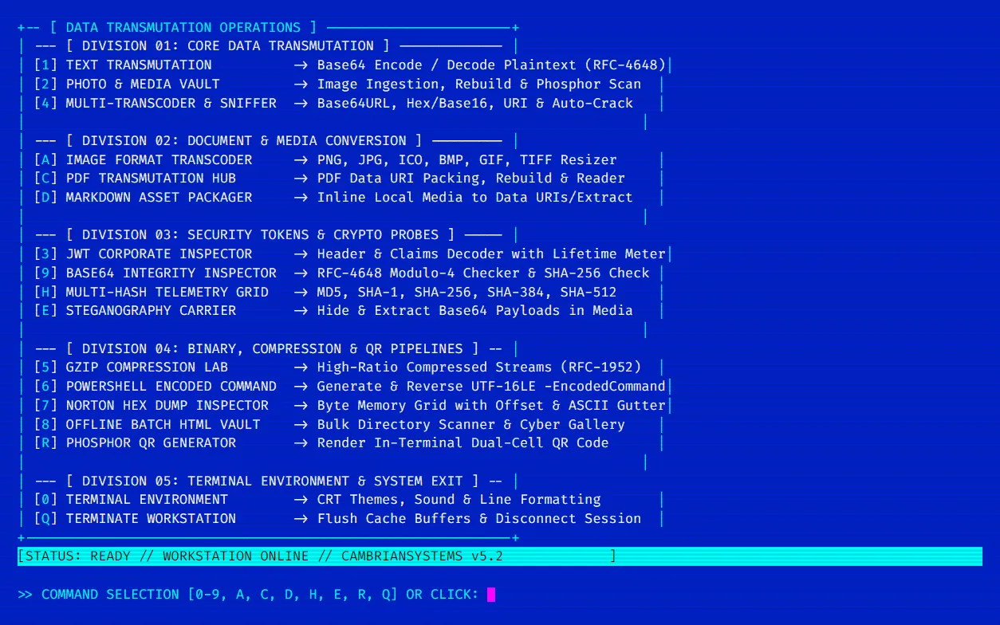

The Philosophy
Most developer tooling is deeply coupled to the internet — package managers, cloud SDKs, external APIs. In enterprise environments, air-gapped networks, or sensitive security contexts, this is a fundamental problem.
cambriansystems-tui is a proof-of-concept and production tool: a full-featured cryptographic workstation that ships as a single PowerShell script. No npm install, no pip, no internet. Just copy and run.
It renders a full interactive TUI — panels, menus, ANSI TrueColor — using only the primitives available in every modern PowerShell environment.
Built-In Tools
JWT Inspector
Decodes corporate JWTs, parses all standard claims (exp, iat, aud), and renders a real-time lifetime meter — showing exactly how many minutes until token expiry.
Multi-Hash Telemetry
Computes MD5, SHA-1, SHA-256, SHA-384, and SHA-512 hashes simultaneously for any input string or file blob, displayed in a comparative table.
Steganography Engine
Encodes and decodes hidden payloads within Base64-encoded media. Implements a custom bit-manipulation scheme for covert data embedding.
Hex Dump Viewer
Classic hex + ASCII dual-column dump for any binary or text input, rendered directly in the terminal with offset markers.
Phosphor QR Generator
Generates scannable QR codes rendered entirely from Unicode block characters directly in the terminal window — no image file required.
Base64 Codec
Bidirectional Base64 encode/decode with support for URL-safe variants and raw binary round-tripping — the original feature the tool was named for.
Implementation Detail: ANSI TUI Rendering
The entire UI is drawn using raw ANSI escape sequences — no external TUI library. Panel layout uses cursor positioning and VT100 control codes:
Inspect the Source
The entire workstation is open-source. One script, zero dependencies.